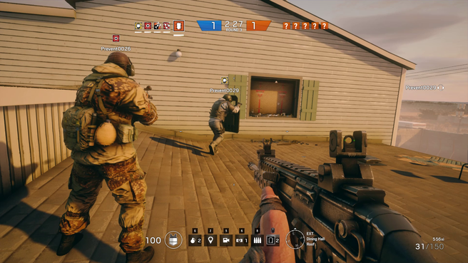

Rainbow Six: Siege heeft 2,3 miljoen dagelijkse spelers
Ubisoft kondigt aan dat Rainbow Six: Siege dagelijks 2,3 miljoen spelers trekt. Daarnaast heeft de game in totaal 20 miljoen geregistreerde spelers. De uitgever stelt dat de hoeveelheid spelers nog altijd groeit en het een voornemen is om Siege door te blijven ontwikkelen.
Hoeveel van die 20 miljoen geregistreerde spelers maandelijks inloggen op tactische multiplayershooter, meldt Ubisoft er niet bij. Ook worden er geen dagelijkse piekaantallen gedeeld, wat het enigszins lastig maakt om te vergelijken met andere games op de markt, die hun successen weer naast andere maatstaven leggen, zoals bijvoorbeeld de dagelijkse piekaantallen van PlayerUnknown's Battlegrounds.
Ubisoft meldt dat Operation Health, een 'offensief' van de ontwikkelstudio om technische problemen in de game met voorrang te verhelpen, bijna afgerond is. Onder andere de hit registration verbeteren is daar een onderdeel van. Verder wordt matchmaking versimpeld en versneld en spreekt Ubisoft van functies als voicechat en parties.
Na Operation Health moet het derde contentseizoen beginnen. Daarbij komen drie nieuwe Operators, of speelbare personages, kijken. Twee daarvan komen uit Hong Kong en eentje uit Polen. Verder komt er een nieuwe map en nieuwe wapens. Dat is in aanvulling op het huidige aanbod van 30 Operators en 16 maps.
Rainbow Six: Siege had een moeilijke start, zo bleek onder andere uit de recensie van Tweakers. Desalniettemin heeft Ubisoft de multiplayergame niet in de steek gelaten en zijn in de tussentijd problemen opgelost met betrekking tot valsspelers, stabiliteit, netwerkprestaties, matchmaking en een tekort aan content. Ook is er een goedkopere Starter Edition gekomen die nieuwe spelers moest aantrekken. Al met al lijken deze maatregelen er in ieder geval voor gezorgd te hebben dat de game uit 2015 nog niet verleden tijd is. Siege is beschikbaar op de Xbox One, PlayStation 4 en Windows.